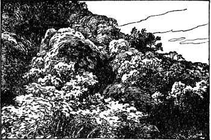
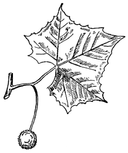
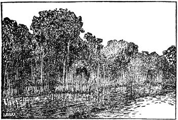
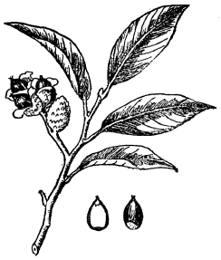
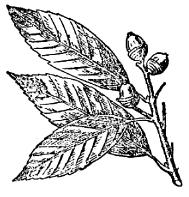
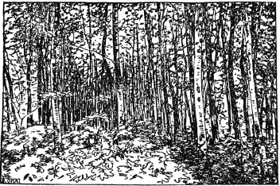
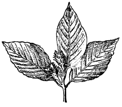
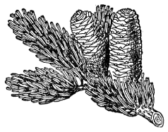
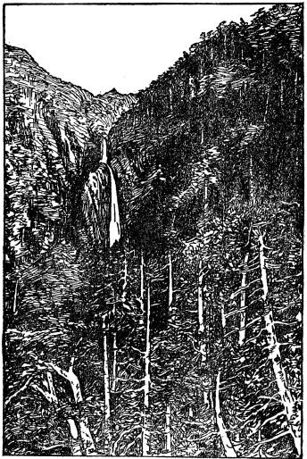
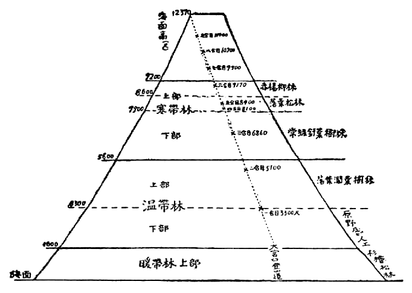

森林とは
山や
丘の
一面に、こんもり
木が
生え
茂つて、
大きな
深い
林となつてゐる
状態をいふのです。われ／＼の
遠い／＼
最初の
祖先が、はじめてこの
地球上に
現れたころには、
森林は、そのまゝ
人間の
住みかでもあり、また
食べ
物の
出どころでもありました。たゞ
今でも
馬來半島のある
野蠻人種は、
木の
枝の
上に
家を
作つて
住んでゐますが、これなどは、
今言つたように、
人間がぢかに
森林の
中にゐた
習慣が
殘り
傳はつた
面白い
一例です。ともかく
大昔の
人間は、
森林に
住んで、
草や、
木の
實や、
野獸や、
河の
魚などをとつて、
生のまゝで
食べてゐたもので、ちょうど
今日の
山猿のような
生活をしてゐたのです。
それが、だん／＼と
人口がふえ、みんなの
智慧も
開けて
來るに
從つて、やうやく
火といふものを
使ふことを
知り、
食べ
物も

たり
燒いたりして
食べるようになり、また
寒いときには
木を
燃してあたゝまることをおぼえたのです。つまり
薪や
炭の
材料として
森林を
利用するようになつたわけです。それに、また
一方では
人口の
増加につれてこれまで
食料にしてゐた
草や
木の
實もだん／＼
足りなくなり、それを
補ふために
畑をこしらへて、
農作をする
必要がおこるし、
同時にまた
野獸も、しだいに
少くなつて
來たので、
牧畜といふことをしなければたちいかなくなりました。その
農作地と
牧場とを
作るためには
森林の
一部分を
燒き
拂ひ
燒き
拂ひしました。ですから
彼等のゐる
村落附近の
山林は、
後にはだん／＼に
狹く、まばらになつて
來て、つひには
薪の
材料にも
不足するようになりました。
なほ
人智がいよ／＼
發達し
人口がどん／＼
増すにつれて、
最後には
奧山の
木までも
伐つて
家屋、
橋梁、
器具、
機械、
汽車、
電車、
鐵道の
枕木、
電信、
電話の
［＃「電話の」は底本では「電信の」］柱といふように、
建築土木の
用材にも
使ふようになりました。それから、
大きな
木材から
細かな
纎維をとつて
紙をこしらへたり、その
他にも
使ふようにもなり、
最近では
人造絹絲の
原料にも
澤山の
木材を
使つてゐます。こんな
風に
薪炭用、
建築土木用、
木纎維用等のために
森林はどん／＼
伐り
倒され、
深い
山、ふかい
谷底の
森林までがだん／＼に
荒されるようになりました。かうなると
大雨が
降るたびに、
山の
土や
砂はどん／＼
流れおち、またおそろしい
洪水がおこるようになりました。
日本では
明治維新の
後、
森林をむやみに
伐つた
結果、
方々で
洪水に
犯され、
明治二十九年度には
二萬九百八十一町村といふものが
水につかり、
一千二百五十人の
死人と
二千四百五十人の
負傷者を
出した
外に、
船の
流失三千六百八十隻、
家の
流れたり、こはれたりしたのが
七十二萬九千六百餘棟、
田畑の
荒されたこと
七十八萬五千餘町に
上り、そのほか
道路の
破損、
橋の
流れおちたもの
等を
加へて、
總損失一億一千三百餘萬圓、その
復舊費二千四百餘萬圓を
入れると
合計一億三千七百餘萬圓といふ
計算でした。つまりその
年、
日本が
外國へ
輸出した
總額の
一億一千七百萬圓よりもまだ
遙に
多くの
金額だつたので、
人々はみんな
洪水の
大慘害には
震へ
上つたものです。
かうした
恐ろしい
洪水はどうして
起るのかといへば、それはむろん
一時に
多量の
雨が
降つたからですが、その
雨が
洪水になるといふそのもとは、つまり
河の
水源地方の
森林が
荒されたために、
雨水を
止めためておく
餘裕がなくなり、
降つただけの
雨水が
一どに
流れ
下つて、
山にある
土や
砂を
河底に
流し
埋めるために、
水の
流れかたが
急に
變つて、あふれひろがるからです。
よく
茂つてゐる
森林では、
降つた
雨の
四分の
一は
枝や
葉の
上にたまつて
後にだん／＼と
蒸發します。そして
殘つた
四分の
三の
雨が
葉から
枝、
枝から
幹へ
流れて、
徐々に
地面に
落ち、そこにある
落ち
葉に
吸ひ
取られるのです。
實際の
試驗によると
松の
落ち
葉は、その
目方の
五倍分の
水をたゝえ、たもつことが
出來ます。ですから、
一貫目だけの
分量の
松の
落ち
葉は、
五貫目の
水を
含むことになります。なほ
松より
外のいろ／＼な
雜木、
苔類は
七倍も
十倍もの
雨水を
含みためることが
出來ますから、
森林ではかなりの
大雨があつても
一時に
洪水を
出すことはなく、
雨水は
數日かゝつてそろ／＼
流れ
出し、また
地中にも
多くしみこみます。だから
山に
森林が
茂つてさへゐれば、
決して
洪水の
出る
心配はないのです。
森林はかように
雨量を
調節することが
出來ると
同時に
一方では
水源の
養ひとなり、
河水の
涸れるのを
防ぎます。くはしくいふと
森林の
中は
比較的濕氣が
多く、
温度も
低く、
木が
茂つてゐますから、
水分の
蒸發することも
少い。またさきほどお
話したように、
落ち
葉や、
苔類が
水を
多く
含み、したがつて、
地中にも
多量の
水分をしみこませますから、たとひ
旱天が
久しく
續いても
森林はその
保つてゐる
水分を
徐々に
流し
出し、
河水が
涸れないことになるのです。
かういふわけで、
森林は
洪水の
害を
防ぎ、
河の
水を
不斷に
絶えず
流し、
水田をもからさないといふ
點で、
土地を
安全に
保つてくれる
效用があることがわかつて
來たので、
以來はじめて
森林を
保護して
育てるようになり、なほ
國土の
保安のために
森林の
一部を『
保安林』といふものにして、
永久に
伐らないで
置くようにもなつたのです。
 温根湯の［＃「温根湯の」は底本では「温根場の」］國有林
温根湯の［＃「温根湯の」は底本では「温根場の」］國有林
その
保安林だけでは、そこから
流れ
出す
河川の
流域一帶の
人々が
利益をうけるといふのみで、これだけではまだ
完全に
一國民全體が
森林を
利用してゐるとはいへませんでしたが、ついで
現れて
來た
水力電氣そのものはすべてこの
都市村落の
燈火や、いろ／＼の
動力にも
利用せられ、
電車、
電信、
電話、
電燈、
工業用機械動力をはじめ、
朝夕の
炊き、
すとうぶや
按摩、
行火の
代りにまでも
用ひられるようになり、
今日では
人間の
生活上電氣は
寸時も
缺くことの
出來ない
必要なものとなりました。その
水力電氣の
水源は
森林によつて、はじめて
完全に
養ふことが
出來るのです。それで、
今では
特に
山岳地方の
森林は、
一ばんにはこの
意味の
水源を
養ふのに
利用され、
建築土木用の
木材や、
薪炭材料等をとるのは
第二とされるようになりました。
しかし、ずっと
最近では、
森林の
利用を、もっとすゝめて、
直接に
人々の
健康のために
應用することを
考へつきました。
大部分の
人が
生活してゐる
都會は、
狹い
土地に
大勢の
人が
住み、
石炭の
煤煙や、その
他の
塵埃でもって
空氣がおそろしく
濁つてをり、また
各種の
交通機關が
發達して
晝夜の
分ちなく、がた／＼と
騷々しいので、
都會に
住む
人は、
體が
弱くなつたり
病氣をしたりします。それで
時々は
自然の
森林に
遊んで、すがすがしい
空氣を
吸ひ、
精神を
保養する
必要があります。
都會には
大小の
公園も
設けられてゐますが、そんなものは
完全な
安靜場所といへません。どうしても
町を
遠く
離れた
美しい
自然の
森林へ
出かけるに
越したことはないのです。この
意味で
近來、
休みを
利用して
各地で
開いてゐる
林間野營や、それから
山岳旅行などはまことに
結構なことです。お
互に
身體が
丈夫でなければ
何事も
出來ませんから、
新しい
空氣の
呼吸と、
十分な
日光浴と、
運動とによつて
食物をうまく
食べることが
一番大切です。これがために
運動や、
競技や、
登山など
家の
外で
生活することがはやり、ひいては
森林を
世人の
休養、
保健のため
利用すること、つまり
森林を
公園として
利用することが
盛んになつたわけです。
以上で
森林と
人との
密接な
關係、
人間が
昔から
森林をいろ／＼に
利用して
來てゐるお
話をしました。この
外にも
森林は
人間の
生活にいろ／＼の
役立ちをしてゐます。
山に
木が
茂つてゐれば、
氣候の
調節をはかることが
出來ます。
森林でおほはれてゐる
土地は、
日光は
枝葉で
遮ぎられて、
地面を
温めることが
少いのと、もう
一つは、
日光が
直射によつて
葉の
面の
水分が
蒸發するときに、
多量の
潜熱を
必要とします。
潜※［＃「執／れんが」、U+24360、199-9］といふのは
物體が
融解したり、また
蒸發するときに
要する
※量［＃「執／れんが」、U+24360、199-9］です。そんなわけで
森林の
附近の
空氣はいつも
冷えてゐます。ちょうど
夏の
暑い
日に、
庭前に
水をまけばにわかに
涼しさが
感ぜられるのと
同じりくつです。しかし、
夜になると
森林は、
枝葉で
土地をおほつてゐますから、その
地面と
空氣と、
※［＃「執／れんが」、U+24360、199-12］を
放散するのを
妨げるので、そこの
空氣は
冷え
方が
少いことになります。
かうして
林の
中の
空氣は、
常に
林の
外と
比べて、
晝間は
涼しく、
夜間は
温かで、
從つて
晝と
夜とで
氣温が
急に
變ることを
和らげます。そして
同じわけで、
夏を
涼しく、
冬を
暖かくして、
一年中の
温度の
變化を
調節します。
それから
前にお
話した
洪水の
豫防や、
水源の
涵養のほかに
森林は
雪國ですと『
雪なだれ』の
害を
防ぐことも
出來ます。
雪なだれとは、
傾斜地に
積つた
雪が、
春暖かくなつたために、
下側の
地面に
氷結した
部分が
急に
溶けるのでもつて、
急に
滑り
落ちるもので、そのために
山麓の
人畜、
農地、
道路等を
破損し、
土砂、
岩石等を
落して、
恐ろしい
害を
與へることがあります。これも
森林があれば
雪が
急に
溶けませんし、たとひ、おちた
雪も
樹幹で
支へられるので、なだれがおきないですむのです。
また
森林が
海岸にあれば、
天災中の、
恐ろしい『
海嘯』の
害も
少くなります。かの
明治二十九年の
三陸地方の
海嘯の
被害區域は
長さ
百五十まいるにわたり、
死者二萬二千人、
重傷者四千四百人、
家や、
船の
流されたもの、
農地の
損失などで
損害總額は
數千萬圓に
上りました。こんな
海嘯などは、
到底人間の
力で
防ぎ
止めることは
出來ませんが、しかし、もし
海岸に
浴うて
［＃「浴うて」はママ］帶のように
森林があれば、
非常な
速力でおし
寄せてくる
潮水の
勢を
殺ぎ、
從つて
慘害も
少くなる
道理です。
かういふ
風に、
森林の
效用を
上げれば
限りもありません。ところで
日本にはかういふ
大切な
森林がどのくらゐあるのかといひますと、
日本中の
森林面積は
總計四千三百九十二萬町で、
實に
日本の
土地の
總面積の
六割四分をしめてゐます。これを
國民の
頭割りにして
見ますと、
一人につき
平均五反五畝五歩に
當ります。
即、
皆樣が
五反五畝五歩の
森林の
中に
一人づゝ
住める
勘定です。
もと／＼
山には、
高い
山、
低い
山、
滑かな
山、
嶮しい
山とさま／″＼ありますが、
日本でも、どれにも、はじめは、
自然に
木が
茂つてゐたのです。もっとも、
富士山や
日本アルプス
以下、すべての
高山の
頂き
近くには、
寒さが
強くて
樹木が
育ちません。このことは
後にくはしくお
話します。しかし
普通の
山では
木の
育つてゐないところはなかつたのです。それが
前に
言つたように
人間が
多くなるにつれて
木材がいよ／＼
多く
必要となり、どんどん
伐るため、
村落に
近い
山の
木はもとより、
高い
山にも
青々としてゐた
木が
無くなつて
赤い
山の
地はだを
見せるようになつたのです。こんな
赤はげ
山は、
山としては
決して
立派なものとはいへません。
人間でいへば
體ばかり
大きくて
徳も
智慧もないとすれば、
人としててんで
品位がないのと
同じです。たとひ
低い
山でも
木がよく
茂つてゐれば、
山のねうちがあつて、
限りない
效用をもちます。
つまり
山は
高いばかりが
貴いのではなく、
木が
茂つてゐるので
本當に
貴いのです。そのためには、いふまでもなく、お
互に
十分に
山を
愛して、むやみに
木を
伐らないようにし、もし
伐れば、その
跡に
代りの
木を
植ゑて
仕たてることを
忘れてはなりません。
以上のわけで
一國の
山全部が
青々としてゐる
間はその
國は
盛んになるのですが、
反對に、いくら、
必要だからと
言つて、やたらに
樹木を
伐るばかりで、
荒しつくしてしまへば、その
國は
滅びることにもなります。なほ
伐木についで
用心しなければならないのは
恐ろしい
山火事です。
生の
立ち
木はちよっと
燃えにくいようにおもへますが、
一度火勢がつけば、こんもりと
茂つた
美しい
森林もまたゝくまに
灰になつてしまふのです。
春から
夏にかけて
山の
雪が
消えた
頃が、この
山火事の
一番多い
時で、
煙草の
吸ひ
殼や、たき
火をした
人のちよっとした
不注意で、
百年かゝつて
出來上つた
森林も
數時間もたゝない
間に、すっかり
燒けてしまふわけです。だから
山登りをする
人は
特に
火の
用心をすることが
大事です。
ついでですが、みなさんは
木ばかりでなく、そこいらの
町の
中にある
樹木も
大切にして
枝を
折つたりしないようにして
下さらなければいけません。
春、
美しい
花が
咲くのが
見たく、
夏の
暑いときに
涼しい
木蔭が
欲しい
以上は、
庭の
木でも、
町のなみ
木でも、
同じように
可愛がつてやらねばなりません。こないだの
關東の
大震災のときには、
淺草の
觀音のお
堂の
裏の
いてふの
木は
片側半分は
火に
燒けても、
他の
半分の
枝葉のために
火がお
堂に
燃えうつるのを
防ぎました。ひとり
いてふに
限らず、
しひのきや
かしのき等、
家のまはりや
公園の
垣根沿ひに
植ゑてある
木は、
平常は
木蔭や
風よけになるばかりでなく、
火事の
時には
防火樹として
非常に
役に
立ち
家も
燒かずに
濟み、
時には
人の
命すら
救はれることがあることも
忘れてはなりません。
こんなに
樹木でもお
互にとつていろ／＼な
役に
立つことをお
知りになつたら、みなさんも
道ばたに
遊んでる
子供がなみ
木の
皮を
剥いたり、
枝を
打つたりしてゐるのを
見られたらすぐに
言ひ
聞かせて、とめて
下さらなければこまります。それはとりもなほさず
樹木を
愛し、
引いては
山をも
愛することになつて、
國家の
安榮をつくることになるからです。
今から
一千八百年ばかり
昔、
筑紫（
今の
九州）に
扶桑木と
言つて、
世の
中に
稀な
大木がありました。その
高さは
九千七百尺餘だつたといひますから、
富士山の
七合目のちよっと
下までのび
上る
勘定です。そのくらゐですから
枝や
葉もおそろしく
繁りひろがつてゐて
朝は
杵島岳を
隱し、
夕方は
阿蘇山を
覆つて、あたりは
晝も、ほの
暗く、
九州の
半分程は
日蔭となり、
百姓が
困り
拔いてゐたといひますが、
幸にも
後でつひにその
大木は
倒れてしまひました。
十二代景行天皇が、
筑紫の
高田の
行宮に
行幸されたときには、
長さ
九千七百尺のその
丸太が、
橋になつて
懸つてゐました。そこで
天皇は
大勢の
家來たちをおつれになりその
長い／＼
丸木橋の
上をお
渡りになつたといふことが、
日本書紀といふ
本に
出てゐます。また
一説には、その
丸木橋は
今の
熊本あたりから、
有明の
海を
渡つて
肥前國温泉岳までかゝつてゐたとも
言ひます。おそろしい
大きな
木ではありませんか。
しかし、これはたゞ
傳説ですから、
あてにはなりませんが、これからお
話するのは、
普通どこにもあり、みなさんがいつでも
實際に
御覽になれる
樹木のお
話です。お
互に
注意したいこと、また、いつもは、だれも
氣のつかぬようなことを、
話しておきませう。
たゞ
樹木といつても
松や
杉のような
大きくなる
木もあり、
つゝじや
ぼけのように、
高く
伸びないで、
枝が
低くわかれ、
小さい
機状になるものもあります。この
松や
杉のように
丈の
高くなり、
形も
大きくなる
樹木を『
喬木』といひ、
つゝじや
ぼけのように
形も
小さく、
機状に
茂る
木を『
灌木』と
呼びます。この
二つの
種類はみなさまのおうちの
庭でも、
公園や、
山や、どこへ
行つても
見られます。
次ぎには
樹木は
葉の
形によつても
區別されます。
すべての
樹木はそれ／″＼
葉の
形がちがつてゐますが、それを
大きく
二つに
分けることが
出來ます。
一つは
あをぎりの
木の
葉のように、
擴がつた
大きな
形のもので、これを『
濶葉樹』とよび、もう
一つは
松の
葉のように
針の
形をした
葉を
持つた
木でこれを『
針葉樹』とよびます。
普通みなさんのお
目にふれる
木で
言ひますと、
（イ）
針葉樹に
屬するものは、あかまつ、くろまつ、もみ、つが、すぎ、ひのき、かや
等。
（ロ）
濶葉樹に
屬するものは、さくら、もみぢ、やなぎ、あをぎり、くり、かし、しひ、くす
等
です。
然し
同じ
針葉樹の
中にも
まつと
ひのきの
葉は
大變違つてゐますし、
濶葉樹の
中にも
あをぎりのような
廣く
大きい
葉、
もみぢの
葉のように
掌状に
分かれた
葉、
やなぎのように
細長い
葉があります。それから
木の
葉は
松の
葉のように
一年中かはらず
青々と
茂つてゐるのがあるかと
思ふと、
櫻のように
春から
夏にかけては
青く
茂つてゐるが、
秋の
涼しい
風が
吹きはじめると、だん／＼
緑の
色が
黄色に
變り、やがて
冬の
寒い
風の
吹く
頃はさら／＼と
落ち
散るものもあります。かく
松やし
ひの［＃「しひの」はママ］木、かしの
木等の
葉のように
冬の
間でも
枯れ
枝のようにならず
一年中青々した
葉を
持つてゐる
木を『
常緑樹』といひ、
もみぢや
さくらの
木のように
毎年春になると
芽を
吹き、
冬には
枯れたように
枝から
葉を
落す
木を『
落葉樹』とよびます。なほ
針葉樹であつて
常緑な
木（まつ、すぎ
等）を『
常緑針葉樹』といひ、
代濶葉樹で
［＃「代濶葉樹で」はママ］あつて
常緑な
木（かし、くす
等）を『
常緑濶葉樹』とよびます。
同樣に
葉を
落し
代へる
木に『
落葉針葉樹』（からまつ、いてふ
等）と『
落葉闊葉樹［＃「落葉闊葉樹」は底本では「落葉闊緑樹」］』（さくら、もみぢ
等）の
別があります。
いてふには
葉の
比較的ひろい
木があるが
植物學上では、やはり
針葉樹の
中にはひるのです。

暖帶林の特徴（かし・しひ等の濶葉樹林）
みなさんがお
正月の
休みを
終へて、
再び
寒風の
中を
學校にお
通ひになるときには、
多くの
木は
芽も
吹かず、
枯れたように
眠つてゐますが、
中には
まんさくのように
寒い
風にも
堪へて
早く、
一二月の
頃に
枯れ
木のような
小枝に、
黄色い
花を
着けたり、また
蝋梅のようにもっと
早く
雪の
中で
香りたかく
咲き
誇るものもあります。そんなのを
見ると、もう
春が
來たのかと
思はれます。
蝋梅はもと
支那の
産ですが、
早く
我國に
移植され
多くは
庭木として
灌木状をしてゐます。
東京では
一月中旬に
蕾を
開き
初め、
二月に
至つて
滿開し、
三月の
上旬まで
花を
開きつゞけてゐます。
蝋梅についで
早く
花をひらく
まんさくは
日本だけの
山中に、
自然に
生えるもので、
木曾や
日光地方に
多く、また
庭木となつて
植ゑられてゐるのもあります。
以上の
二つは、
冬から
春にかけて
花のさく
木の
中で、
特に
目に
立つものです。つぎにだん／＼と
寒さも
薄らぎ、やがて
三月になると、
梅、れんぎょう、ぢんちょうげ
等の
世界となります。
蝋梅や
梅のように
美しく
花をつける
樹木を『
花木』とよびますが、
梅は
早春の
花木中でも
第一の
木として、
昔から
愛せられて、
庭木や
盆栽にも
仕たてられるものです。
梅はもと／＼
土地の
乾いた
日當りのよいところに
適し、
陰地には、ふさはない
木ですから、
梅林を
作るには、なるべく
南向きで
土地の
傾斜したところがよいのです。
樹木には、それ／″＼
日陰地にもよく
育つ
木や、また
日陰と
日陽の
中間のところを
好む
等、
種類によつて、
土地に
適、
不適があります。その
中で、
日陰にもよく
育つ
木を『
陰樹』とよび、
日陽地を
好む
木を『
陽樹』といひます。
樹木のこの
性質を
知つておくことは
大切なことで、
庭木を
植ゑかへるときにも、
山に
木を
植ゑつける
時でも、それ／″＼の
木が
陰樹か
陽樹かによつて、それ／″＼
適當な
土地に
植ゑることが
必要です。
さて
梅の
花も
終りとなり、
日毎に
風も
暖かになりますと、
桃の
節句の
桃の
花、
油菜の
花がさきます。
野や
畠には
たんぽゝが
黄色くかゞやいてきます。その
頃には
河岸の
柳も
芽を
出して、やさしい
枝を
風に
靡かせはじめます。それからだん／＼に、
冬の
間すっかり
葉を
落してゐた
落葉樹も
一齋に、ぽか／＼した
日を
浴びて
緑の
若芽を
出しはじめます。
野に
山に
陽炎が
燃えてきます。ところによつて
芽を
吹く
時季はむろん
違ひますが、
東京附近では
三月の
中旬頃から
五月頃までに、
芽を
出します。
やまざくら［＃「やまざくら」は底本では「やまぎくら」］のように
緑色の
若葉をもつもの、
生け
垣に
多い
かなめもちのように
紅色のうつくしい
若芽をもつものもあり、また
まつは
緑の
針を
出して
一二年も
持ちこたへた
古い
葉を
少しづゝ
替へていきます。それから、かや、まき、とべら
等の
常緑樹の
發芽を
最後に
五月の
上旬頃には、すべての
樹木は
春の
着つけを
終つて、ついで
來る
夏の
生活の
備へをします。
木々が
若葉青葉に
飾られた
頃はすが／＼しい
景色です。
一年中でもその
若葉がどうしてあんなに
紅や
緑色の
美しい
色を
現すのかといひますと、その
色は
葉の
表面の
部分、
即、
表皮や、
葉の
内部の
細胞の
中に
紅色やその
他の
色が
含まれてゐるためですが、それといふのも、
若葉は
葉の
外部に
丈夫な
皮もなく、
質も
軟で
弱いので、
強い
日光にあたるのをきらひます。それで
葉の
内部に
色のある
液を
含んで、その
強い
光を
遮るわけで、つまり
若葉が
自分自身の
保護をするのです。しかし
木の
葉がだん／＼に
發達して、
組織も
丈夫になるに
從ひはじめの
色は
次第に
消えて、つひにその
樹木特有の
色となるのです。
春の
終りには
葉が
皆緑色になるのは、さうしたわけです。また
木の
葉ははじめから
淡緑や、
黄緑の
色のものが
多いのですが、その
若葉の
色も、その
樹木の
種類によつて、それ／″＼
異るものと
見なければなりません。
同じ
新緑のうちにも
濃い
緑や、
淡い
緑のもの、
黄緑のものなどがあります。
例へば
日比谷公園横の
道路や、
青山赤坂通りなどに
植ゑてある
鈴を
下げたような
實のなる
並木樹として
立派な
すゞかけの
木は、
明るい
淡緑色をしてゐます。
幹が
青くつる／＼した、
葉の
大きい
あをぎりの
若葉は
黄色がかつた
緑色です。かういふ
風に
葉の
同じ
緑色の
中にちがひがあるのは、なぜかといふと、これは、
主に
葉の
細胞内に
含まれてゐる、
緑色素といふものの
濃さ
淡さによるものです。この
緑色素は
顯微鏡で
見ると
美しい
小さい
緑の
粒でそれを『
葉緑粒』とよんでゐます。かく
緑色は
植物の、
特に
葉に
固有な
色で、われ／＼は
木といへば、すぐに
緑の
色を
思ひ
出さずにゐられないくらゐ
親しい
色です。

すゞかけのき
これで
木の
若葉の
美しい
色や、
新緑の
緑色のこともおわかりになつたと
思ひますから、
次ぎには
樹木の
生活について
少しお
話をしませう。
第一に、
青々した、
木の
葉といふものは、
植物にとつては
一番大切で、ちょうどわれ／＼の
心臟や
胃や
膓のような、
生活上の
必要な
器官です。その
葉の
内部の
葉緑粒は、
毎日、
日光の
力をかりて、
空氣中にある、
人間に
害をする
炭酸瓦斯も
吸ひ、そのかはりに、
人間になくてはならない
酸素をはき
出して、
砂糖や
澱粉といふような
含水炭素とよぶ
養分を
造り、それを
葉から
枝へ、
枝から
幹を
下つて
根に
送つて、
木全體の
發育のための
養分にし、その
殘りは
蓄へておきます。かういふ
風に、
葉が
日光の
力をかりて、その
木自身を
養ひ、
生活をつゞけていく、この
作用を『
炭素同化作用』といひます。
樹木の
葉が
青々と
茂つてゐるのは、この
重大な
役目をはたすためです。そのために、
木は
若葉をふいてから
次第に
葉を
丈夫にかため、
夏の
盛りを
幸に、どん／＼
太陽の
光と
共に
働いて、
秋に
紅葉をする
支度や、
冬が
來ても
困らない、
養分の
貯へをするのです。
さういふわけで
夏には
木々は、
見るからに
元氣な
青々した
色をして、はちきれるような
生活をします。みなさんはじり／＼と
燒きつけるような
海岸の
砂濱に
出たり、
汗を
流しながら
登山をされるときのことを
考へてごらんなさい。
海岸には、
枝ぶりのうつくしい
くろまつがつらなり
生えたりしてゐます。
同じ
松でも
あかまつは
山に
適してゐますが、
くろまつは
潮風に
最も
強い
木です。その
林があるので、ただに
景色がいゝばかりでなく、
前にもお
話したように
海嘯の
害を
防ぐことも
出來ます。また
海のつよい
風は
濱邊の
砂を
吹き
飛ばして、
砂丘を
造つたり、その
砂丘の
砂をまた
方々へ
吹き
運んで、
大事な
田や
畑や、
時によると
人家までも
埋めてしまふことがあります。
海岸の
くろまつの
林は、さういふ
砂の
飛來を
防ぎとめる
役目をもするのです。
また
登山をする
場合には、
平原から
山麓、
山腹へかゝり、それから
山の
頂上に
着くまでの
間には、
植物の
姿がいろ／＼に
變つていつて、
高い
山であれば
頂き
近くには、
木がおのづとなくなつて、
草本ばかりとなり、なほ
上ると、しまひには、たゞ
岩石ばかりで
草もなくなつてしまひます。また
谷や
濕地や、
瀧や
湖沼の
附近には、
特殊な
草木がしげり、
高原にはそこにのみ
育つ
植物がはえてゐます。
夏の
高原一帶に
高山植物がさきつゞいてゐたりする
光景はとても、
下界では
想像もつかない
美しさです。かように、
高山に
登るに
從ひ、
植物が
變つて
行くことや、
高山植物のことなどは
後にあらためてくはしくお
話をします。
春の
若葉や
新緑の
森の
美しさとともに、
夏の
濃緑がすんだ
後の
秋の
林の
紅葉の
景色も、いづれ
劣らぬ
自然の
誇りです。
日本には
昔から
紅葉の
名所が
多く、また、いたるところに
紅葉を
見ることが
出來ます。
關東では
日光や
鹽原、
關西では
京都の
嵐山、
高尾などは
有名なものです。
一たいどうして
木の
葉がそんなに
紅くなるのかといひますと、それは
秋になると
急に
涼しくなる、その
氣候の
變化のために、
新緑のところでお
話した、
葉緑素が
次第に
變つて
來て、
葉の
中の
細胞内に
紅色の
液體が
出來ますからです。
紅葉の
美しさは、
植物そのものゝ
種類と、その
發生の
状態とでそれ／″＼
異ひますが、
一面には
附近の
景色にも
左右されるものです。
青々と
茂つた
まつや
もみなどの
常緑樹の
間にそまつた
紅葉は、
色の
配合で、
紅色がきはだつて、てりはえ、また、
湖や
沼や
溪流を
前にしても、やはり
一だんと、
美しく
見えます。
つぎには
紅葉する
木は、どんな
木かといひますと、
日本では
普通もみぢ（
槭樹）が
一ばん
多いのです。
中でも、
やまもみぢは
庭にもよく
植ゑられます。
深山にある
紅葉はまた
種類が
異ひ、
一ばんうつくしいのは、
はうちはかへでで、それは
葉が
羽團扇のようで、
長さが
二三寸もある
大きなものです。このほか
もみぢ葉の
形をしてゐない
葉でも、いろ／＼
紅葉するものがあるのは、みなさんもよくご
存じでせう。
霜が
降る
頃になりますと
柿の
葉や、
蝋燭の
蝋を
取る
はぜの
葉や、
なゝかまどといふ
木の
葉も
もみぢに
劣らず、
美しく
紅葉します。また
木の
葉は
紅くなるばかりでなく、
黄色に
變るのも
少くありません。その
中でも、
いてふがお
社の
境内などに
眞黄色になつて、そびえてゐたりするのは、
實にいゝ
眺めです。
さうした
紅に
黄に
色どられた
秋の
山や
林も、
冬が
來ると、すっかり
葉がおちつくして、まるで
枯れ
木ばかりのような
寂しい
姿になり、たゞ
常緑樹の
すぎや
ひのきの
木だけが
黒ずんだ
葉をつけたまゝ
暖かい
春の
日が
再び
廻つてくるのを
待つてゐます。つまり
落ち
葉は
冬の
寒い
時には
夏の
間に
盛んに
根に
貯へた
養分をそのまゝ
持つて
休養するのです。
皆樣はしかし
冬の
間にも
木の
枝をよく
見ると
落葉樹でも
常緑樹でも、それ／″＼
芽をもつてゐるのが
見える
筈です。これは『
冬芽』とよび、
落葉樹では
葉の
落ちたあとの
枝の
間から、
常緑樹ではその
葉と
枝との
間に
芽ぐんで
寒氣をも
平氣でくゞつて
少しづゝ
生長を
續け
春になると
急に
發芽するわけです。
以上で
樹木が
春芽を
出してから、しまひに
冬を
迎へ、
再び
春をまつまでのお
話を、
一とほりすましました。
樹木が
地上に
生えた
後は、
今お
話したような
生活を
續けて、ずん／＼
伸びて
行くのですが、かうして、おほよそ
幾年間ぐらゐ
生きるものかといひますと、それは、その
土地のいろいろな
状態や、
外部からの
影響もあるので、
一樣ではありませんが、それ／″＼の
木は、おのおの
一定の
年月の
間生育するもので、
普通の
木でも
二三百年から
五六百年ぐらゐ
生きてゐるものが
多く、
中には
千年以上も
生きるものがあります。
人間の
壽命を、かりに
五十年とすれば、
樹木はおよそその
十倍も
長命をするわけです。その
年月がどうしてわかるかといへば、
植ゑつけた
記録による
外には、
木を
横に
切つて、
生地に
出てゐる
圓い
環が
幾つも
重つてゐるその
理の
數を
數へてみるとわかるのです。この
環を『
年輪』と
言ひます。
材木屋の
店先に
行つて、
圓い
材木のはしを
見れば、これが
年輪かと、すぐにわかります。これは
木は
夏の
間はさかんに
生育する、
言葉をかへて
言へば
幹の
内部の
細胞がどん／＼
生長するのにたいして
冬の
間はその
生長がとまるため、
内部の
細胞も、そのまゝ、
伸びないでゐます。これが
毎年くり
返されると、その
一年ごとに
生長した
部分だけが、
圓く
環になつて
區分けがつくのです。しかし
樹木によつては
氣候の
急激な
變化のため
又は、
病虫害で
一時葉を
落したりすると、この
生長状態に
例外が
出來て、
環が
完全に
現れず、
半分ぐらゐで
消えるのがあります。さういふ
片わの
年輪のことを『
擬年輪』と
呼びます。これはその
木の
生長年數を
數へるときは
除いて
數へなければなりません。
次ぎに
日本にある
長生きをしてゐる
大木の
有名なものを
少し
上げて
見ませう。
今、
日本で
一番大きい
木といへば
鹿兒島縣姶良郡蒲生村にある
大樟です。これは
幹のまはりが、
地上五尺の
高さのところでしたが
七十三尺八寸あり、
根元のまはりは
百二十五尺四寸もあつて、
木の
高さは
十五間、
樹齡八百年と
言はれてゐます。
今かりにその
木の
根元から
切つた
切り
口に
疊を
敷いてみるとしますと
六十九疊も
敷けますから、けっきよく、
八疊の
座敷が
八つと、
五疊の
部屋が
一つとれる
勘定になります。
次ぎに
富山縣高岡市末廣町にある
七本杉は、
地上五尺のところで
幹廻り
六十六尺、
木の
高さ
二十餘間、
樹齡は
一千年と
稱へられてゐます。この
木はもと
根株から
七つの
幹に
分れてゐましたが、
内五本は
先年の
暴風で
折れて
今は
二本の
幹だけとなつてしまひました。
臺灣阿里山にもすばらしい
巨木があります。
阿里山で
神木ととなへられる
臺灣花柏（
紅檜）は、
地上五尺の
高さの
幹のまはりが
六十五尺、
木の
高さ
二十五間、
樹齡二千年といはれてゐます。
明治神宮大鳥居はいづれもこれと
同じ
木で
造られたものです。
 阿里山の神木（紅檜）
以上
阿里山の神木（紅檜）
以上の
外日本には
各地に
老樹名木があつて、
一々あげて
數へることも
出來ません。
日本で
最もおほきく
生長する
木は
くすの
木が
第一で、
次ぎは
すぎ、たいわんさわら、いてふ、しひ、
まつといふ
順になります。
また
高さの
最も
高くなるのは
すぎで、
秋田縣の
長木澤の
杉林や
甲州身延山の
千本杉の
中には、
高さが
三十五間もあるのが
見られます。それから
樹齡ではさっき
言つた
阿里山の
紅檜が
第一で、
千二三百年から
二千年近くのものが
澤山あります。
各地にのこつてゐる、かういふ
老樹名木は、たゞ
植物學上または
林業上あるひは、
風致の
上からの
研究の
資料として
意味があるばかりでなく、いづれも、
數百年または
千餘年の
間、その
土地にゐついてゐるのですから、
何よりもその
地方の
過去を
思ひ
起させ、
地方歴史上の
參考ともなり、
愛郷心をも
養ひ、ひいては
愛國心を
育むことにもなります。なほこれからお
話をする
日本の
森林植物帶取り
調べにはこれらの
老樹はなくてはならぬものなのです。
皆さんこんないろ／＼のわけをお
話したら、われ／＼がお
互に、
今生き
育つてゐるすべての
老樹名木を、ます／＼
大事にして、
出來る
限り
長命をさせるように
努めなければならないことがおわかりとなりますでせう。
高い
山に
登られた
人は、だれでも
氣付づてゐる
［＃「氣付づてゐる」はママ］ことですが、
山に
生え
茂つてゐる
樹木も
麓と
中腹とでは、まるで
種類がちがつてをり、
頂上近くになると、
又さらにほかの
種類の
植物が
生えてゐます。
それから
遠くへかけて
旅行するとわかることですが、
例へば
臺灣から
九州へ
渡り、
本州を
縱斷して
北海道へ
行くとしますと、
九州では
臺灣で
見なかつた
木が
茂つてをり、
北海道へはひると、
又さらに、すっかり
變つた
木ばかりで、かなり、ちがつた
遠い
國へ
來たといふ
感じがします。かういふ
風に、
土地の
高低や
位置の
相違によつて、
寒さ
暖かさがちがふにつれて、
生える
樹木もそれ／″＼ちがふのです。
もと／＼
地上の
植物が
生長するには、
土壤のほかに、
※［＃「執／れんが」、U+24360、224-1］と
光と
水とがなくてはなりません。
※帶地方［＃「執／れんが」、U+24360、224-2］はこの
三つのものが、うんとそろつてゐるので
植物が
一番よく
茂つてゐますが、
次第に
南と
北の
兩極に
近づくに
從つて、
草や
木も
少くなり、
何一つ
生えない
不毛の
平原になつてしまひます。しかし、
人々が
餘程の
田舍にゐても
住めば
都で、それ／″＼たのしくをさまつてゐるのと
同じように、
植物も
※［＃「執／れんが」、U+24360、224-5］いところであらうと、
寒いところであらうと、
生育出來る
限りそれ／″＼、じぶんに
向いたところに
根を
下して、
生きてゐます。ですから、われ／＼が、ある
一つの
土地にはえた
木を、やたらにわきへ
持つて
行ったつて、それが
一々つくわけのものではありません。
ばなゝの
木を
東京にもつて
來て
植ゑてもそのまゝでは
實はなりません。また
涼しい
奧羽地方に
出來る
林檎や
櫻桃は
暖かい
九州地方では
植ゑてもよく
育ちません。つまり
樹木は
各々一ばん
適する
場所にあつてはじめて
完全に
繁殖することが
出來るのです。そのため、
地球上でも、
赤道を
中心にして
兩極に
向ふにしたがひ、
又は
海岸から
高い
山へ
登るにつれて、その
寒暖の
差に
應じ、しぜんとそこに
生える
樹木の
種類が
違ひ、
森林のあり
樣もそれ／″＼かはつてゐます。
この、おの／＼の
位置によつて
生える
樹木の
種類と
森林の
形とが
異つてゐるあり
樣を
名づけて、『
森林帶』または『
森林植物帶』と
言ひます。わかりやすく
言へば、
地球上の
部分部分が、
赤道に
沿うて
帶のように
細長くわかれてをり、その
一つ／＼に、それ／″＼ちがつた
植物がそだつてゐることをいふのです。
同じ
平地でも
臺灣と
本州と
北海道とでは
樹木が
違つてゐるように
地球上の
緯度の
差につれて、
言ひかへると
赤道から
南と
北とへ
向つて
平にすゝんでいくとすれば、
※［＃「執／れんが」、U+24360、225-8］いところから
寒い
地方へ
行くにつれて、そこに
生育してゐる
樹木の
種類及び
森林の
形が
各々異つてゐる、とは
今はお
話しました。この
森林のそれ／″＼
異つた
状態にある
幾條もの
帶を『
水平的森林帶』といひます。
ですから
地球が、かりに
山がなくて
一面の
平地であつたならば、それらの
緑の
地帶は、
赤道を
中心にこれに
並行して、
北と
南とへ
美しい
環をえがいて、
地球を
取り
卷いてゐるはずですが、しかし
實際は、
海や
山が
不規則に
入り
亂れてゐますから、その
水平的森林帶も、ところ／″＼で
中斷し、また
氣候にも
影響されて
不規則な
帶となつてゐます。
次ぎに
森林帶はまた
垂直的にも
見ることが
出來るのです。
海岸からだん／＼に
山地へかゝり
高山へ
登つていくにつれ、だん／＼と
温度が
低くなるのは、ちょうど
緯度の
南から
北へ
進むにしたがつて
寒さがますのと
同じです。
緯度は
一度進むごとに
攝氏の
約一度づゝ
温度が
下りますが、
高山ではおよそ
百五十めーとるから
二百めーとる
登るたびに
攝氏の
一度ぐらゐ、
温度が
低くなり、
登れば
登るほど
寒さを
加へます。ですからさういふ
山に
生えてゐる
樹木は、
寒暖の
差や、そのほか
氣候の
變化によつて、
山麓から
頂上までの
間にいろ／＼
模樣の
變つた
幾つかの
森林帶がかさなつてゐるわけです このように
土地の
高低によつて
現れる
森林帶のことを『
垂直的森林帶』といひます。
これから
日本の
森林帶についてお
話しませう。
御承知のように
日本は、
北は
北緯五十度三十分の
千島の
果てから、
南は
二十二度の
臺灣にわたる
細長い
島國で、
地理上臺灣の
南部は
※帶［＃「執／れんが」、U+24360、227-2］に、
本州、
北海道は
温帶に、
千島、
樺太は
寒帶近くになつてゐます。
從つてところによる
氣候や
土質の
變化も
甚だしく、そこに
育つ
樹木や、
森林も、おのづと、いろ／＼ちがつてゐます。それをわけると、一、『
※帶林［＃「執／れんが」、U+24360、227-4］』二、「
暖帶林」三、『
温帶林』四、『
寒帶林』の
四つになります。
日本で
※帶林［＃「執／れんが」、U+24360、227-6］にはひるものは、
臺灣の
平均一千五百尺以下の
平地、
琉球本島の
南半分、
小笠原群島、
新領土のマーシャル、カロリン、マリアナ
列島等、
一年中の
平均温度攝氏二十一度以上の
土地です。この
帶の
特徴として、
一年中霜や
雪が
降らないので、
植物の
生長が
全然休止する
時がありません。
樹林には
榕樹、
赤榕樹その
他蒲葵や
たこのきといつたものが
盛んに
育つて
空をおほうてゐますが、
中でも
榕樹はこの
帶の
代表的なものですから、
※帶林［＃「執／れんが」、U+24360、227-11］のことを
榕樹帶ともいひます。なほ、
珈琲、
椰子の
木、
護謨樹、
船材にする
麻栗等、
非常に
有用な
木も
大抵この
帶に
栽培することが
出來ます。

熱帶林（ひるぎ林）
この
帶に
屬する
區域は、
沖繩縣の
中央以北から、
四國九州の
全部と
本州の
南部で、
平均北緯三十六度以南の
地です。
温度でいへば、
同温度の
地方をつなぎあはせた
線、すなはち
同温線の
攝氏十三度以上、
二十一度以下の
地です。この
帶の
樹木は、
 帶
帶といふほど
かし、
しひ等の
常緑濶葉樹がおもにそだち、
海岸の
潮風の
強い
砂地には、よく
くろまつが
生え、
南部には
くすのきが
多く
生えて
暖國的な
氣分をたゞよはせてゐます。

しひのきの實と小枝

しらかしの實と小枝
元來この
帶の
樹木はすべて
常緑濶葉樹で、こなら、くぬぎ
等の
落葉濶葉樹がその
間に
點々と
混つてゐる
筈なのですが、
常緑濶葉樹は
昔からたび／＼
伐られたり、
又は
野火の
害に
會つたため、
數が
減り、
反對に
落葉樹や
松林などがふえて
來ました。なほこの
帶は
氣候が
温和で
人の
居住にも
適當し、また
高山の
中腹以下の
地なのですから、
土地が
早くから
開け
人口が
多く、
物産の
出るのも、ほかの
帶よりずつと
多量です。
今日、ひのき、すぎ
等の
林をこの
帶の
中に
見るのは、
人が
移し
植ゑたもので、もと／＼
ひのき、すぎ
等は
温帶林に
生育してゐたものです。
この
帶は
暖帶林のつぎにつくもので、
本州の
北部から
北海道大半の
西南、
及び
朝鮮の
大部分にもあり、
同温線六度以上十三度以下の
土地です。
垂直的の
森林帶でいひますとこの
帶の
下部界が、
暖帶林の
上部界にあたり、この
帶の
上部界は
臺灣では
中央で
一萬尺の
高山に
達してゐます。
九州や
山陰、
山陽地方、
畿内諸國も
山が
低いので
暖帶林の
上部界の
上部はすべて
頂上までこの
帶に
屬し、
四國では
六千五百尺のところを
境とし、
奧羽地方では
更に
下つて
四千七百尺から
三千五百尺の
高さまでになり、
北海道の
南部では
一千五百尺に
下り、その
中央では
遂に
海水面と
一致してゐます。この
温帶林にはどんな
樹木が
生育してゐるかといふと、
一番いちじるしいのが
ぶなの
木です。
本帶を
一名『
椈帶』といふのも
ぶなが、その
代表樹種であるからです。しかしこの
帶に
屬する
土地でも、その
南部では、
自然のまゝに
育つた
林が
少く、
人がどん／＼
伐つてはその
跡へ
すぎ、ひのき
等を
植林して
育てた
林が
多いので、
今日では
ぶなの
林を
見ることが
出來なくなつた
場所も
少くありません。けれども
暖帶によく
生育してゐる
かしの
類が、こゝでは
自然に
消えてなくなつてゐることや、もと／＼
温帶林にぞくする
老樹が
殘つてゐるのを
見るとそこが
温帶林であることがわかります。

暖帶林（樟などの常緑樹林）
かく、その
帶の
特徴樹種は
ぶなですが、その
外に
おほなら、みづなら、とち
等の
落葉濶葉樹を
混じてゐることもあり、
地方によつては
ひのき、さわら、ひば、すぎ
等の
針葉樹をまじへてるところもあります。
木曾や
秋田その
他の
地方で、
特別に
針葉樹を
保護してゐる
土地を
除けば、あとはほとんど
落葉樹で、
冬になつて
木の
葉が
落ちると、まるで
枯れ
木が
遠く
天に
連なつてゐるように
寂しい
景色になります。
 温帶林（ぶなの林）
温帶林（ぶなの林）

ぶなのき
この
帶は
水平的には
北海道の
中央以北、つまり
温帶林の
北部で、
同温線攝氏六度以下の
地方と、
千島、
樺太の
全部を
占めてゐます。これを
垂直的に
見れば、
平地では
※帶［＃「執／れんが」、U+24360、232-7］に
屬する
臺灣でも、
新高山のように
高さ
一萬三千尺にもあまる
高山があるので、
前の
温帶林の
上部にこの
寒帶があります。
しかし
九州にはこの
帶にはひる
土地がなく、
四國の
六千五百尺以上の
高山（
石槌山、
劍山）に、
僅にこの
帶の
下部界を
見ることが
出來ます。
本州では
中部の
諸高山の
六千尺から
九千尺までのところが、この
帶にはひり、
北海道の
中央では
三千五百尺、
樺太の
日本領地では
二千尺から
二千五百尺の
高さまでがそれです。
この
帶には
主として、
白檜、とゞまつ、えぞまつ、
あをもりとゞまつといつた
常緑針葉樹林でなり
立つてゐますが、
本州では
高山の
頂き
近くに
しらべや
あをもりとゞまつが
多く、
臺灣の
高山には
にひたかとゞまつが
生えてゐます。

しらべ 鱗果をつけた小枝

寒帶林（臺灣新高とゞまつの林）
以上お
話したのは、つゞめていふと
暑い
※帶［＃「執／れんが」、U+24360、233-8］から
暖、
温、
寒といふ
風にその
各地方に
適してよく
育つ
森林の
區域と、その
帶の
特徴とでした。こゝまで
來ますと
最後の
寒帶林の
上部はどうなつてるかといふ
疑問が
出て
來るでせう。
えぞまつや
とゞまつの
針葉樹林を
出てその
先へ
移ると、
急に
光が
強く、あたりは
ぱっと
明るくなつたような
氣がします。
即、そこは
灌木帶といふところで、
殊に
偃松が
目につくので、
偃松帶ともいつてゐます。
偃松は
地上二三尺のところに
腕を
伸ばし、
肘を
張つたように、
枝を
四方にひろげてゐます。
葉は
五葉で
裏が
白く、
普通の
松とはずっとちがつてゐます。またこの
偃松がなくて、そのかはりに
灌木状の
落葉樹が
茂つてゐるところもありますが、かように
偃松や
灌木状の
落葉樹が
生育してゐるのは、そこが
高山で
氣候が
極めて
寒冷であり、
風も
強いので、しぜんと、
木も
低く
小さくなつたのです。
本州の
木曾や
甲州、
信州等の
高山に
登つた
方はよくご
存じでせうが、
日光の
白根山、
男體山やまた
富士山などでは
偃松を
見ません。この
帶には
偃松のかはりに、いはやなぎ、しゃくなげ、なゝかまど、やまはんのき、べにばないちご
等が
生育し、
特に
しゃくなげはつや／＼した
厚い
葉、
硬い
枝、
美しい
花が
目立つので、
他の
木とすぐに
見分けがつきます。
花は
普通紅い
色ですが、
中には
黄や
白の
美しいものもあります。
以上のすべての
木は、みんな
幹や
莖が
小さく
低くて、
多くは
一つところに
群生してゐます。またそここゝの
灌木の
下には、
次ぎにいふ
高山植物が
可愛く
生えてゐます。
山によつてこの
灌木帶の
幅は
大變狹いところもあります。この
帶の
間に、
高山植物の
草本帶が
混つたり、
時には
偃松が
草本帶の
中を
通り
越して、
山頂近くまで
伸びてゐることもあるので、
各帶をはっきりと
區別することは
出來にくいのです。
人々がお
花畠といひ
山上の
花園としてめづらしがり、あこがれてゐるのがこの
草本帶です。
前の
偃松帶の
上部が
徐々にこの
草本帶に
移つて
行きます。この
帶は
日本の
諸高山では
大概山の
頂きに
近いところに
現れてゐて、
高さは
八九千尺から
一萬尺に
及んでゐます。
草本帶には、
乾燥したところに
生える
植物、すなはち『
乾生』のものと、
濕氣のあるところに
生える『
濕生』のものとの
區別があつて、
前者は
岩石や
砂地の
乾燥した
場所に
生え、
後者は
濕氣のある
中凹みのあるところに
生えるのです。
高山にはよくさういふ
凹地に
水を
湛へて、
時には
沼地を
形づくり、
附近の
岩の
間に
雪をためてゐたりするところがあります。
沼地にはこの
雪が
溶け
流れこむので、その
沼水の
温度は
非常に
低く、ひどく
冷たいわけになります。
乾燥地すなはち
岩地、
砂地の
水分の
少いところでは、
植物も
澤山群つて
生えることが
出來なくてそここゝと
岩石地に
根をおろし、
風が
強いので
葉は
地にへばりついてをり、
根は
莖に
比べて
非常に
太く
長くなり、
岩の
裂け
目などに
深くもぐりこんでゐます。この
植物のうち
岩の
碎けて
積つた
上に
生えるものには
花が
赤くて
紅緑の
葉をもつた
優美な
こまぐさや、
鋸葉の
四出した
莖のさきに
赤い
唇形の
花がむらがつてゐる
みやましほがま、
梅に
似た
黄色い
花をひらき
鋸齒のある
圓い
葉を
三つづゝ、
絲のような
莖につけた
みやまきんばい、
小さい
芝のような
みやまつめくさ、たかねつめくさ
等があります。
また
岩の
隙き
間には、
青紫の
ちしまぎきょう、いはぎきょう、
花は
白梅に
似て、
葉は
豆のように
厚ぼつたい
いはうめ、
鋸齒のある
腎臟形の
葉を
根元に
出して、
莖の
上に
黄色の
五瓣の
花をつける
みやまだいこんや、
はゝこぐさに
似て
白ふらんねるのような
葉を
持つてゐる
みやまうすゆきそう等が
生えます。
次ぎに
草原の
濕地は『
腐植土』といつて、
植物が
枯れて、
根や
枝や
葉が
腐つた
肥料になつてゐるような
土に
富み、
水分も
多いので、
植物の
生育には
大變都合がよいため、こゝではいろんなものが
伸び／＼と
群つて
茂り、
美しいさま／″＼な
花が
咲き
誇ります。こゝに
生えるものは、
葉も
花も
乾燥地に
生えてるものより
大きく、
色も
綺麗なものが
多いのです。
黄金色のものでは
しなのきんばい、みやまきんぽうげ、
白くて
大きな、
梅の
花に
似たものには
はくさんいちげ、
淡紅色の
いはかゞみ、かわいらしい
みやまをだまき等澤山な
種類があります。
これらの
多くの
高山植物に
色どられてゐる、いはゆるお
花畠は、
日本では
本州中部の
日本アルプスの
諸高山に
多く、
中にも
白馬山のは
有名です。
年中雪に
閉されてゐた
山頂に
夏が
來て、
雪が
溶けると、すぐその
下には
可憐な
草が
目も
覺めるばかりに
咲き
出でます。
眞白な
雪溪に
隣り
合せて、このお
花畠を
見るときの
感じは、なんとも
言へず、
貴く、かわゆく、
美しいものです。
地衣帶は
草本帶の
上部に
接してをり、
兩帶の
區別ははっきりとしませんが、ともかく
一萬尺もの
高さのところでは、きびしい
寒さと、
激しい
風とでほとんど
草も
生えることが
出來ず、たゞ
裸の
岩の
上に
地衣が
固着してゐるきりです。この
地衣のために、
岩はいろ／＼
美しい
模樣や
紋を
現してゐます。
日本では
木曾の
御嶽や
駒が
嶽はこの
帶の
位置がよくわかります。この
帶の
上部はそれこそ
地衣もない
裸のまゝの
岩石です。
以上で
日本の
森林植物帶を
水平的にも
垂直的にも
見て
來たわけです。つぎには、どなたにも
名前のしたしい
富士山への
登山と、その
森林帶とのお
話をして、
森林植物帶のお
話を、なほよくわかるようにしておきませう。
富士へ
登るには、
普通吉田口、
御殿場口、
大宮口と
三つの
登山道がありますが、
森林帶を
見ながら
登るには
吉田口か、
大宮口を
選んだ
方がいゝと
思ひます。こゝではかりに
大宮口から
登るものとしてお
話します。
あの
廣々とした
富士の
裾野には、
普通の
登山期よりも
少し
遲れて
八九月の
頃には、
殊に
美しい
秋草がたくさん
咲きます。そこには
春とちがつて
新しい
緑の
色は
少いですが、
春の
野よりも
色どりには
變化があつて
綺麗です。われもこう、ききょう、かるかや、おみなへし、すゝき、ふぢばかま、
はぎの
秋の
七草をはじめ、いろ／＼の
草が
野原一面に
咲いてゐます。しかしこの
裾野は
大昔からこんな
草原だつたのではありません。
古い／＼
昔は、この
一帶は
暖帶林の
上部から
温帶林の
下部に
屬する
樹木、すなはち
常緑の
濶葉樹や
落葉樹でおほはれてゐたのです。ところが、それが
古くから
火事で
燒かれたり、
斧で
伐られたりして、
天然にあつたそれ
等の
樹木が
大抵消えてなくなつてしまひ、つひに
今日見るような
茫々として、はてしもないような
草原になつたのです。
今、ところ／″＼に
すぎや
ひのきや
あかまつの
林が
見えるのは、
人が
新しく
植ゑたのです。
この
裾野の
景色を
眺めながら、だん／＼
上つて
一合目をも
過ぎ、
海拔三千五百尺あたりのところへ
來ますと、いつしか
草原も、
人が
植林した
林などもなくなつて、ずっと
奧ゆかしい、ちがつた
林間にはひります。
つまり
温帶林の
上部にはひつたわけで、
喬木の
ぶな、おほなら、はしばみ、もみぢ、けやき、かつら、ほゝのき、きはだ、みづき、かば、くり
等の
落葉濶葉樹が、うっそうとしてをり、ところ／″＼に
温帶林の
特徴樹である
ぶなの
巨木が
茂り、
木の
下には
種々な
灌木、
草本、
蔓生植物が
盛んに
生えてゐるのを
見ることが
出來ます。さらに
二合目を
過ぎて
海拔五千七百尺のあたりへ
來ますと、
林は
一變して
今までの
濶葉樹は
急に
少くなり、
常緑針葉樹ことに
もみ類こみつが、
ひのきに
似た
とうひや
しらべ等の
巨木が
聳えてゐます。
前の
落葉濶葉樹の
葉が
淡緑色で
美しいのに
反して、こゝでは
針葉樹は
暗緑色で、
林の
中は
濕氣が
多く、また
木の
下には
蔭に
耐へる
木が
生えてゐるほかに
蘚苔類も
澤山生えてゐます。

富士山の森林帶
こゝは、つまり、
寒帶林で、いはゆる
常緑針葉樹帶です。それから
海拔八千尺の
四合目まで
登れば、
林は
三度その
姿を
變へて、
常緑針葉樹の
林は
落葉針葉樹のからまつ
林となつて
來ます。そこへ
來ると
最早寒帶林の
終りに
近づいたことがわかります。すなはち
落葉松林の
幅はごく
狹くなつてをり、
木も
小さくなつてゐます。そこから
上は
再び
落葉濶葉樹の
かば類とか
はんのき類とか、
美しい
花が
咲く
しゃくなげ等の
小さく
低い
植物が
生育してゐます。
この
灌木帶を
過ぎて
六合目の
海拔九千尺のところにつきますと、そこは
最早森林帶の
境目で、そこから
草本帶となるのですが、
富士山には
日本アルプスの
諸高山で
見るような、お
花畠は
見られません。こゝからは
岩石と
砂礫の
道を
一歩々々踏みすゝんで、つひに
海拔一萬二千餘尺の
絶頂へたどりつくわけです。
富士に
限らず、ほかの
高山に
登るときでも、
今お
話したような
森林植物帶をつぎ／＼に
見きはめることが
出來ます。
富士山はほとんど
海面からそびえ
立つてゐると
見てもよいのですが、しかし、
山によつてはじめから
土臺の
高いところでは、
山麓に
草原がなく、
麓からすぐに
喬木の
林に
入ることも
出來ませうし、
北へ
行けば
行くほど、たとひ
低い
山でも
温帶林、
寒帶林、
灌木帶、
草本帶と、
高さに
從つて、それ／″＼
生えてる
植物が
變つて
行くのが
目につきます。
日本は
南北に
長く
續いてゐて、ところによる
氣候の
變化もいろ／＼ですから、
動物もまた、いろ／＼なものが
棲んでゐます。
野生の
獸だけでも、
二百六十八種、
牛や
馬その
他家畜動物は
十六種もゐますが、こゝでは
山に
棲む
動物について
少しくお
話しませう。
山や
野には、
二百六十八種もの
動物がゐるといひましたが、しかしわれ／＼が
實際に
山を
歩く
場合は、めったにさういふ
動物に
出あはすものではありません。
登山者が
熊にぶつかるなどといふことは、さう／＼あるものではないのです。しかし、
本州、
四國、
九州の
山にわたつてくま、ゐのしゝ、しか、かもしか
等の
大きな
獸が
棲んでゐるのは
事實です。
熊は
本州の
山に
産するものは、アジア
大陸に
産する
黒熊の
變種です。
秩父の
山や
駿河、
甲斐、
信濃、
相模、
越中、
越後等の
山中にをり、
木の
實や
やまぶどうを
好んで
食べてゐます。
北海道の
熊は、みんな
羆の
種類で
内地に
棲んでゐる
熊とは
異ひます。からだ
全體が
黒く
顏だけが
茶色のや、
肩から
胸に
白い
斑のあるのもゐます。
木登りも
水泳ぎも
非常に
上手です。
食物はおもに
夜出て
草の
根、
果實、
魚、かに
等をとり、ときには
人里へ
來て、
家畜をかすめとつていくこともあります。
野猪は
形が
豚に
似て
全身黒褐色のあらい
毛でおほはれてをり、
頸が
短いので
駈けだすと
急には
方向を
變へられない
動物です。
猪の
牙は
犬齒の
發達したもので、この
牙で
獲物を
引っかけたり、
敵を
防いだりします。
夜になると
方々を
歩き
廻つて、
筍、
松茸、
芋、
稻、
大豆等の
農作物をあらしたり、
木の
實を
食ひ、
野鼠、
兎なども
捕へて
餌食にします。
鹿はみなさんもよく
見てご
存じでせう。
鹿は
本州、
四國、
九州、
朝鮮等に
廣く
分布してゐます。
牡鹿は
牝鹿より
少し
大きく、
頭部に
角を
持つてゐます。この
角は
毎年ほゞきまつた
時期に
一囘落ち、
翌年また
生えます。
年を
經るにしたがつて
叉状にわかれますが
三本角以上にはなりません。また
鹿は
春と
秋との
二囘毛をかへます。われ／＼が『
鹿の
子』とよんでゐる
斑のある
毛は
夏毛のときのものです。
食物は
春、
樹木の
若芽が
出ると
好んで
食べ、また
汁の
多い
草も
食べますが、
夏になつて
草木が
生長すると
穀物や
そば等を
食べ、
寒くなつて
木の
葉や
草が
萎れると
森林内で
ぶな、かし、くりの
木の
實を
食べたりします。
日本の
狐は
日本固有のもので
山の
穴に
棲んでゐます。
體は
二尺ぐらゐで
尾が
長く、からだの
半分以上もあります。
食物は
主に
野鼠ですが、
人家に
近いところでは
鷄などを
掠めることもあります。しかし
近頃は
狐の
毛皮で
帽子、
首卷きなどが
造られます。
米國から
移入して
飼養されてゐるものもあります。
狸は
俗に
むじなともいひますが、これは
地方によつてさういふので
たぬきも
むじなと
同じです。また
穴熊のことを
むじなとよぶ
地方もあり、
夏時の
たぬきのことを
むじなといふところもあります。
狸の
毛皮は
大變役に
立つもので、
値段も
高いのです。
狐や
狸は
昔は
人を
化すものと
信じられたりしましたが、
決してそんなばかげたことがあり
得るわけもありません。
狸は
性質が
極めて
臆病で、
人間にも
慣れ
易い
有用な
動物です。
以上のほか
北海道には
おほかみが
少し
殘つてゐます。
内地でいふ
おほかみは
やまいぬのことです。また
内地の
山にゐる
やまねこは
家猫の
逃げて、いつのまにか
山の
生活に
慣れてしまつたものなのです。
次ぎに
山に
棲む
面白いけものに
むさゝびといふものがゐます。
四肢をひろげて
木から
木へ
飛びわたりますが、
鳥のように
上へは
飛べません。
枝から
枝へ
飛び
下るだけです。これは
北方に
棲むものほど
毛の
色が
薄いのですが、
南方のものは
濃い。きつね、たぬき、てん、のうさぎ、むさゝび、りす
等山に
棲むけものはどこにゐるのでも
毛皮は
役に
立ちますが、
特に
北方に
棲むものほど、
質がいゝのです。
縁日でよく
赤い
目をしたかわいゝ、
白や
斑の
うさぎを
賣つてゐるのを、みなさんも、たびたびごらんになつたでせう。しかし
山には
褐色の
うさぎがゐます。
日本の
山の
うさぎには
二通りあつて、その
一つは
平常褐色をしてゐますが、
冬になると
眞白に
變るもの、も
一つは
一年中通して
褐色のものです。
冬白くなる
兎は
越後兎といつて
寒い
國の
雪の
降る
地方に
棲んでゐます。つまり
兎は
外敵に
弱い
動物ですから、
冬雪が
降つて
野山が
眞白になれば
自分のからだをも
同じように
白くして
外から
容易に
見つからないようにするのです。かういふ
風に
自分で
自分を
保護するために
外界の
物の
色と
同じ
色をもつ、その
色のことを『
保護色』といひます。
高原や
高山に
登る
途中、
鳥がわれ／＼の
足音に
驚いて、ふいに
飛び
立つことがあります。その
羽ばたきには、
初めの
間こそ、こちらでもびっくりしますが、しかしだん／＼
進むにしたがつて、むしろ
鳥が
飛びたつのも、
道連れが
出來たように
懷かしくなるものです。
殊に
信州あたりの
高原を
かっこうの
聲を
聞きながら
歩いたり、
濶葉樹林の
涼しい
林間を
登つたりするときには、
鳥によびかけられるような
氣がしてこちらからも
かっこうと
返事がしたいくらゐです。
かっこうは
山の
鳥でもわりに
人里近い
平地にゐます。
かっこうは
ほとゝぎすの
類で
※帶［＃「執／れんが」、U+24360、249-1］に
棲むものですが、
夏になると
北方の
涼しい
地方へやつてくるのです。
中には
日本を
通り
過ぎて、もっと
北の
國へまで
行くのもあります。じひ
しんちょう（
慈悲心鳥）の
聲は
山中でなければ
聞かれません。これは
背に
灰黒色、
胸と
腹が
淡赤茶色で、
同じその
部分の
白い
ほとゝぎすや
かっこうと
區別することが
出來ます。
木曾の
御嶽や
日光にもゐます。
次ぎに
澄み
切つた
朗かな
聲で
鳴く
ぶっぽうそう（
佛法僧）は
きつゝきの
類で、
形は
烏に
似てゐますが、
大きさはその
半分もありません。
羽毛は
藍緑色で、
翼と
尾とが
菫色を
帶びてゐます。
飛ぶときはその
翅が
實に
美しい
色に
閃きます。この
鳥は
羽も
綺麗ですが、
鳴き
聲も
美しく、「ぶっ、ぽう、そう」と
鳴きつゞけます。
三河の
鳳來寺山と
高野山、
比叡山の
三箇所だけにゐる
靈鳥で、
決して
姿を
見せず、
聲が
聞えるだけだといひますが、もとは
※帶［＃「執／れんが」、U+24360、249-10］の
鳥で、
遠く
渡つてくるのですから
以上の
三つの
山ばかりでなく、ほかの
深山にもゐるにちがひありません。
ふくろ（
鶚）は
體が
一尺もあり、
暗褐色の
羽毛を
趾までかぶつてゐます。
翅が
非常に
軟ですから
飛ぶときに
音がしません。
晝は
木の
洞穴や
岩の
隙き
間などにひそんでゐますが、
夜になると
飛び
出して、
大きな
目玉をぎょろ／＼させて
鼠などをさらつてあるき、
薄氣味の
惡い
聲で「ほう、ほう」と、
鳴きます。
この
鳥は
食物の
中で
不消化なものがあれば
 嚢
嚢の
中でまるめて、
口から
吐き
出すから、
巣の
下には、かならず、さうした
團子のような
塊りが
積つてゐます。
みゝづくは
とらふづくの
類で、
獸のような
顏で、
耳のようなものが
立つてゐます。しかしこれは
耳たぶではなく、
實は
毛が
立つてゐるだけなのです。しかし、その
下には
耳の
孔がありますから、その
立つてゐる
羽のために、いくらか
聞えがいゝかと
思はれます。
羽は
淺黄色に
暗褐色の
條紋があるので、
とらふといふ
名がついてたのでせう。この
鳥について
面白いことは、
鳩や
かさゝぎ、
栗鼠等の
造つた、
古い
巣にはひつて
卵を
産むことです。
高山の
はひまつ帶には
らいちょう（
雷鳥）といふものがゐます。
晴天には
草むらにかくれて
出て
來ませんが、
曇つた
日などには、とんで
來て
驚かされることがあります。
鳴き
聲も
雷のように
強く、いかにも
高山の
頂きに
棲む
鳥にふさはしい
丈夫そうな
鳥です。
大いさは
鳩よりも
大きく、
夏の
間は
翅と
尾の
一部をのぞくほかは、
全部黒褐色で、
冬になると
雪と
見誤られるように
白色に
變ります。これは
寒國に
棲む
兎が
冬の
間眞白になるのと
同じ
保護色です。
雷鳥は
はひまつの
芽や
高山植物の
若芽や
實を
食物としてゐます。
性質は
遲鈍ですから、
人が
近寄つても
容易に
逃げません。
杖で
叩けば
落せそうな
低い
空を、うろ／＼
飛び
廻つてゐます。また
高山に
特有なものに、いはつばめ、いはひばり
等もゐます。
山岳の
溪流にはあまり
目にふれませんが、やはり
特有の
魚がゐます。いはな、やまめ、うぐひ、あゆ
等はその
中の
主な
魚で、
高山の
水が
清く
澄みきつてるように、その
肉も、くさみがなく、
味がいゝ。
いはなや
やまめは
 谷
谷を
流れる
激流の
中で、はつらつと
泳いでをり、
二三尺も
空に
飛び
上るほどの
元氣ものです。
水の
澄んだところでは、
鈎の
先へ
雷鳥の
羽毛かそれがなければ、
鷄の
羽毛でもくゝりつけて
下すと
釣れます。
濁つてるところでは
餌づりをするのですが、
釣り
竿は
長く
丈夫なものがいゝようです。
いはなは
色が
少し
黒く
腹に
赤い
點があり、
やまめは
色が
白く
縱に
美しい
藍色の
條があります。また
やまめの
口は
いはなより
少し
尖つてゐて、
大きさは
共に
七八寸がとまりです。
日本アルプスの
上高地の
梓川には、もと
いはなで、
足が
滑るといはれたほど
澤山ゐたものですが、
近頃はだんだん
減つて
來たようです。これは
鹽燒き、てんぷら、
煮つけ、
刺し
身などになり、
鑵詰めにあきた
登山者にとつて
何よりの
珍味です。
以上私がお
話して
來たことは、
山林はわれ／＼
人間にとつては
大變に
關係が
深く、いろいろの
意味でずいぶん
役に
立つてゐること、それから
有用な
樹木のこと、
日本の
森林帶の
話、
山に
棲む
獸や
鳥や
小魚のお
話でした。これでみなさんも
山に
關するいろ／＼なことを
覺えられたので、
折があつたら
高い
山にも
登つて
實際について
見られると、
一層興味があるでせう。
――（終）――